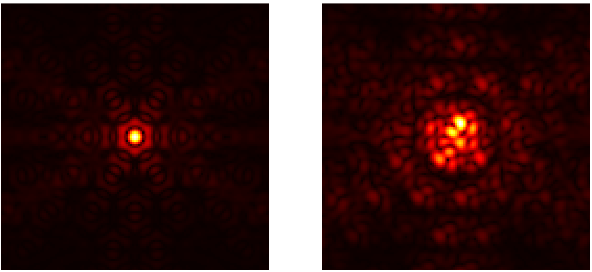
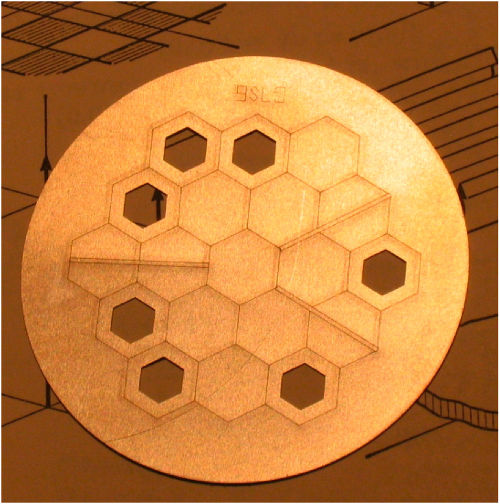
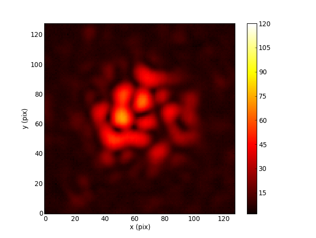
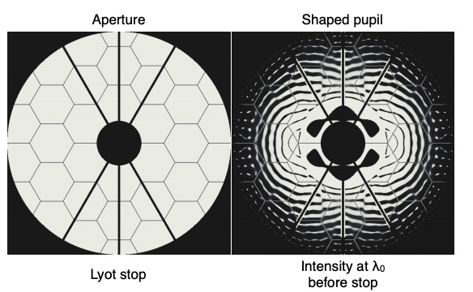

The Brightest Stars
and their Planets
Benjamin Pope, NYU
benjaminpope.github.io/talks/stsci/stsci
Transiting Planets
Atmospheric spectra can come from transmission spectroscopy during a transit, or direct imaging at high contrast and angular resolution.
My Sagan Fellowship project is to search for planets transiting naked-eye stars (V mag < 6.5) in order to find ideal targets for characterization with the upcoming James Webb Space Telescope.
Kepler Photometry
but the pixels have different gains ("inter- and intra-pixel sensitivity variation")...
and the pixel window doesn't necessarily track the whole PSF perfectly ("aperture losses").
Halo Photometry
\[ f_i \equiv \sum\limits_j w_j p_{ij} \]
\[\begin{align} TV \equiv \sum_i |f_i - f_{i-1}| \end{align} \] subject to constraints \[\begin{align}\forall_j w_j &> 0\\ \sum_{i=1}^{N} f_i &= N.\end{align} \]
This is the \(L_1\) norm or 'taxicab metric' on the derivative of the time series.
This has analytic derivatives you can compute with automatic differentiation - easy to optimize.
I led the K2 Bright Star Survey: asteroseismology and variability classifications for all 161 stars - a unique legacy sample.
K2 Halo data of the 161 naked-eye stars are available as High Level Science Products on MAST archive.stsci.edu/hlsp/halo
Released pipeline as open source: github.com/benjaminpope/k2halo
Pleiades
Πλειάδες, the Seven Sisters
Alcyone, Atlas (dad), Electra, Maia, Merope, Taygeta, Pleione (mum)

Atlas lightcurve: raw (top) and halo (bottom)
Aldebaran
α Tauri
الدبران ,the follower
... follows the Pleiades!
Detection of p-mode oscillations at 2.2 μHz

Without this asteroseismology, we have
\[M = 1.27^{+0.24}_{-0.20} \, \mathrm{M_{\odot}}\]
and age \(4.9^{+3.6}_{-2.0} \, \rm Gyr \)
With this new constraint, I calculated
\[M = 1.16^{+0.07}_{-0.07} \, \mathrm{M_{\odot}}\]
and age \(6.4^{+1.4}_{-1.1} \, \rm Gyr \)
Using MESA models, I found that on the main sequence Aldebaran b had a semi-major axis of \(1.50 \pm 0.03 \) AU and Aldebaran had a luminosity \(2.0 \pm 0.7 \, L_\odot \)...
so Aldebaran b had an insolation comparable to Earth when its star was on the main sequence. First dead planet!
Direct Imaging
We are starting to detect planets at the epoch of formation - eg the accreting protoplanets PDS 70 bc.

(ESO/A. Müller et al.)
The main limitation on direct imaging is from wavefront aberrations which corrupt phase information.
Correlate baselines around a triangle of receivers
JWST has an aperture masking instrument on NIRISS to obtain closure phases
Linearize response to phase noise: suitable for stable high Strehl images, with point-source calibrators
Separate out linear subspaces of Fourier components that are immune to phase noise vs susceptible
Every point source image gives you a free wavefront measurement in the instrument pupil!
Cophasing segmented mirror in the lab (Pope+2014)
Optics is mathematically like machine learning: matrix multiplications and simple nonlinear functions
Can use automatic differentiation!
Differentiable optics also allows fast gradient descent for optical design - eg coronagraph pupils
